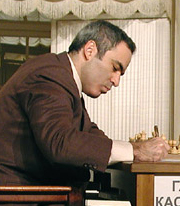
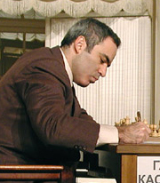

This hack was submitted to Music Hack Day Boston, 2013.
Special thanks to the libraries that made this doable in a weekend:
- Chessboard.js - used to render the board and pieces.
- chess.js - used to track game state.
- music.js - used to notes into frequencies.
- jQuery - the stdlib of the web.
- jQuery Color Plugin - used to make the piece capture animation.
- Wikipedia - for the pictures of the chess players.